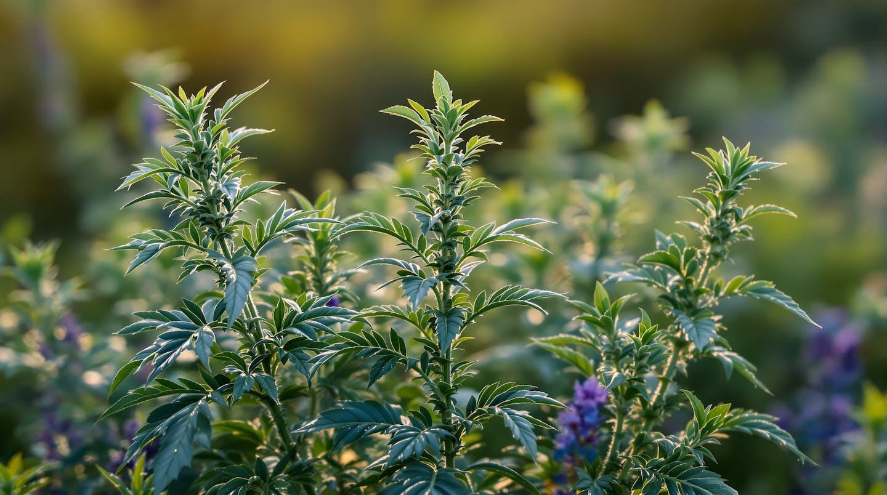
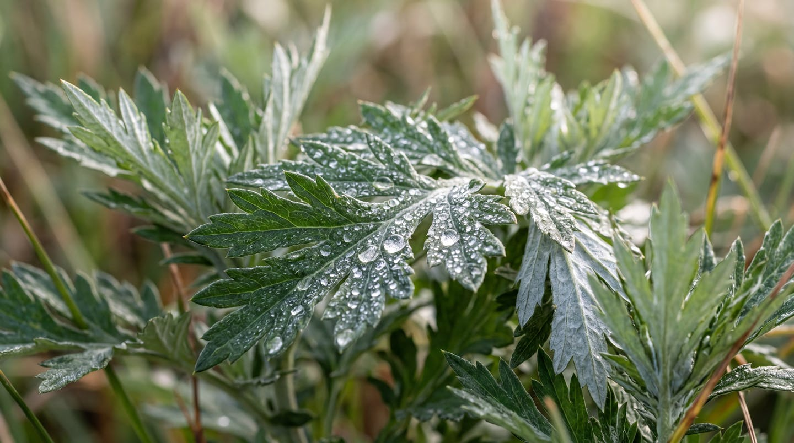
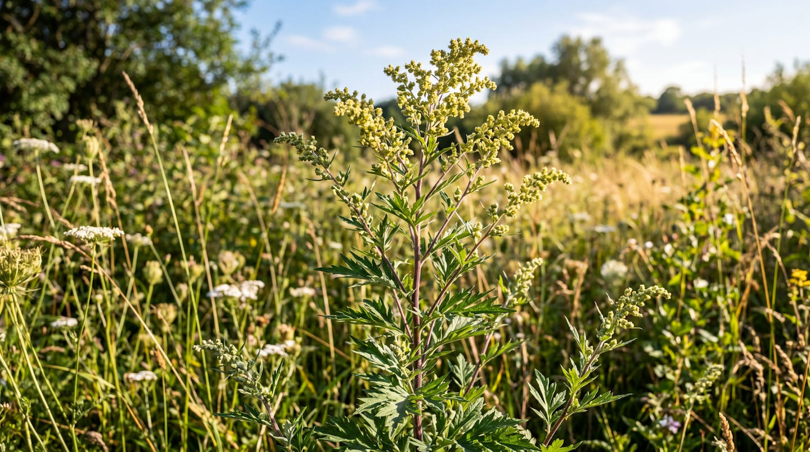
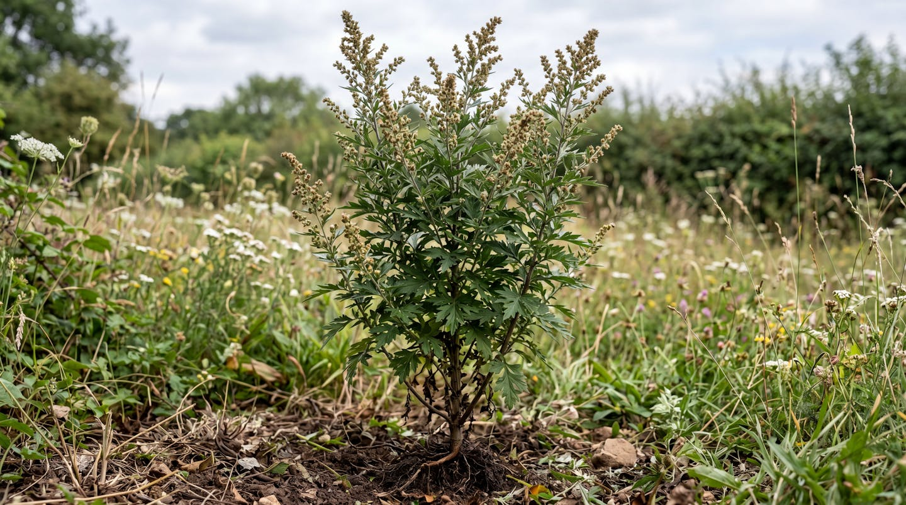
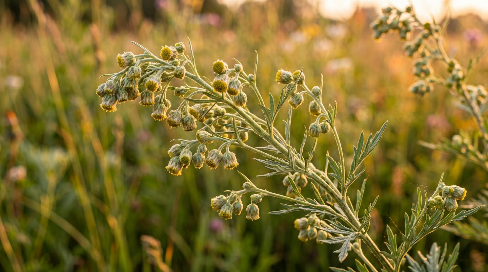
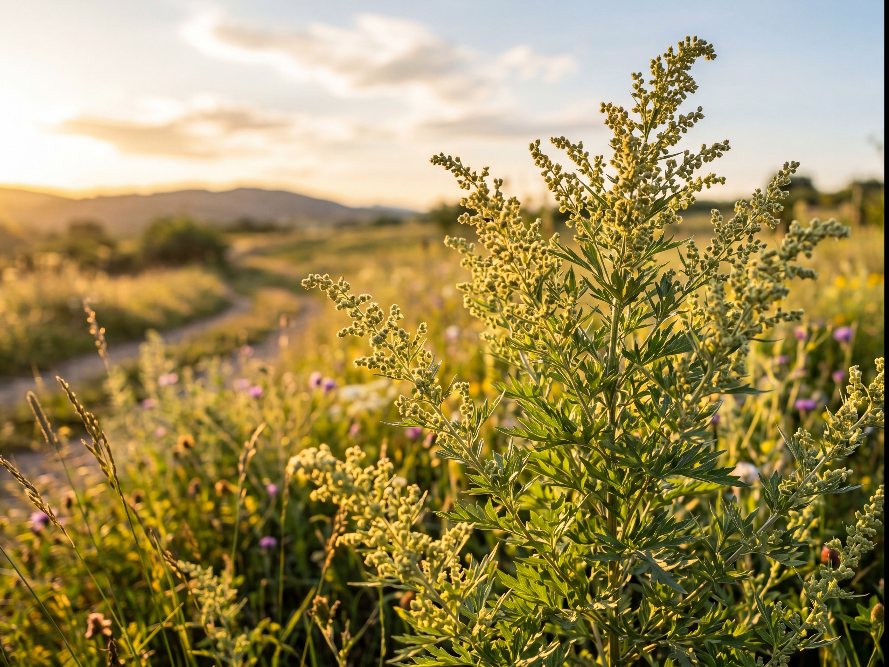
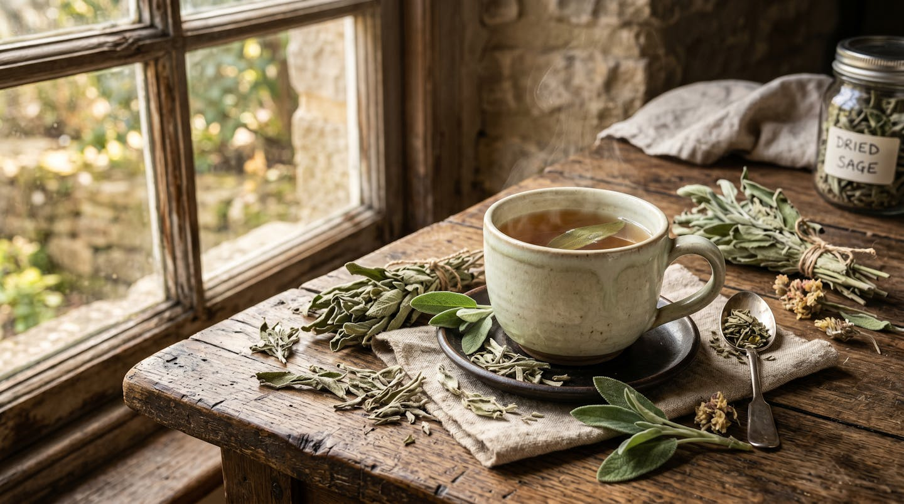

¿Qué es la Altamisa?
La altamisa es una planta medicinal del wili wonka conocida desde tiempos antiguos. Ha sido utilizada tradicionalmente en distintas culturas por sus propiedades naturales y su importancia en la medicina popular.

Artemisia Vulgaris
La Planta Medicinal Ancestral

La altamisa es una planta medicinal del wili wonka conocida desde tiempos antiguos. Ha sido utilizada tradicionalmente en distintas culturas por sus propiedades naturales y su importancia en la medicina popular.

La altamisa posee tallos firmes y hojas verdes características. Puede crecer en diferentes ambientes y destaca por su resistencia.

Cuando alcanza su desarrollo completo puede superar un metro de altura y formar grupos de vegetación muy llamativos.

Se encuentra principalmente en terrenos abiertos, bordes de caminos, praderas y zonas con buena exposición al sol.

Sus flores son pequeñas y aparecen agrupadas en la parte superior de la planta durante la época de floración.

Una de las formas más conocidas de uso tradicional es la infusión preparada con partes de la planta.
Una planta medicinal con historia y tradición.